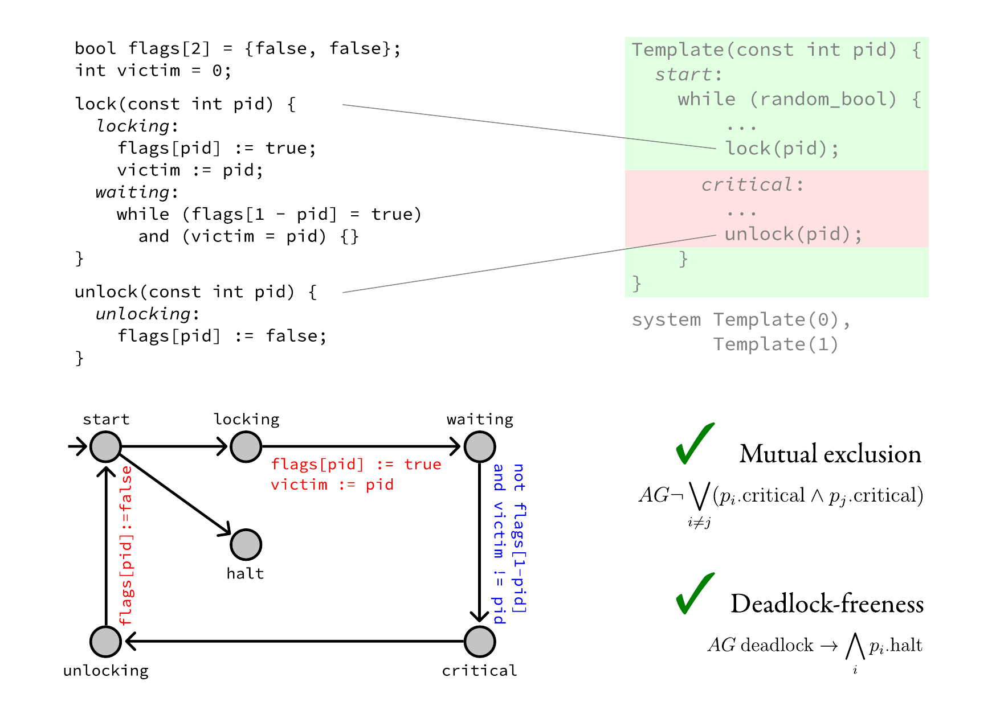
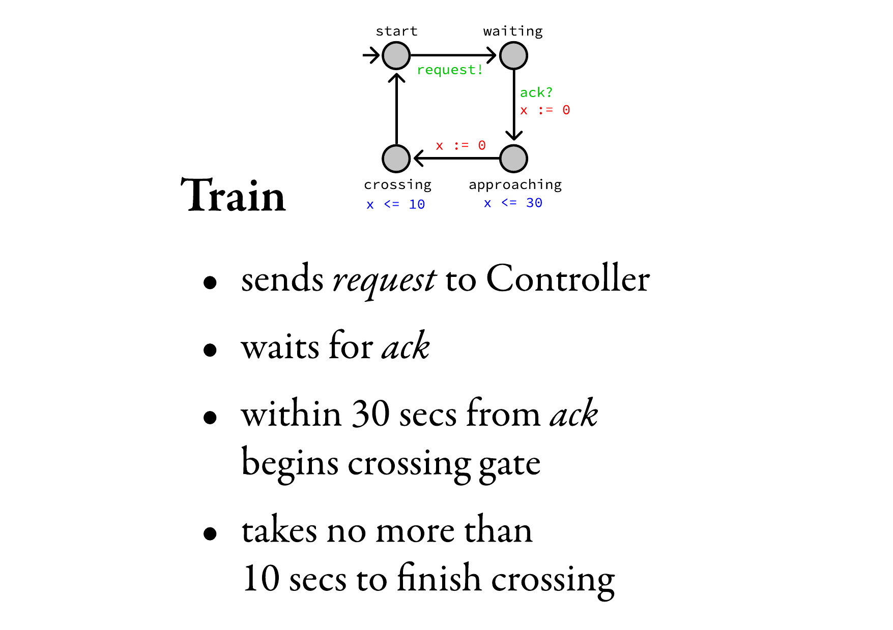
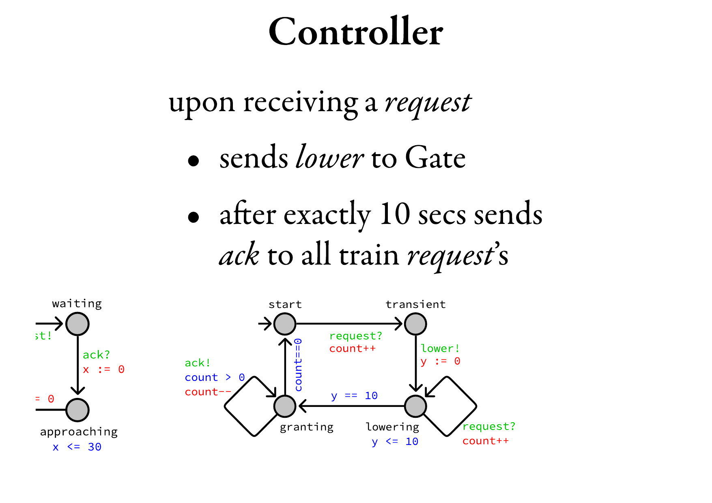
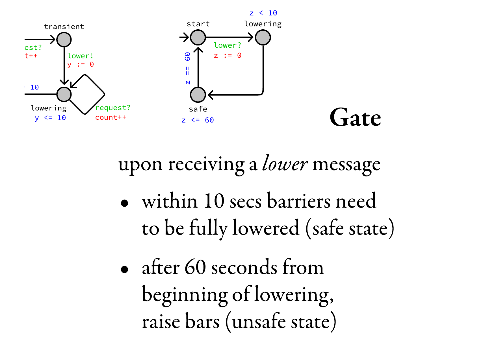
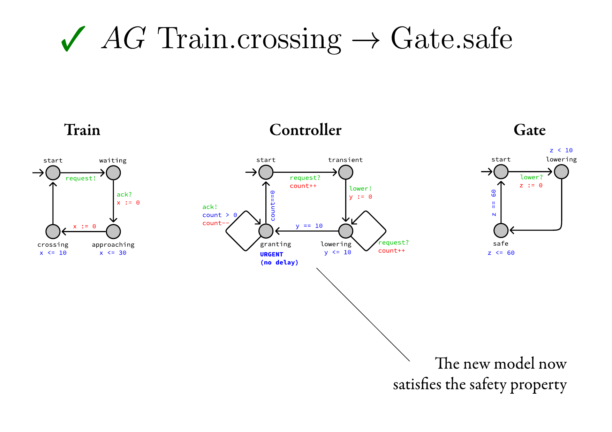
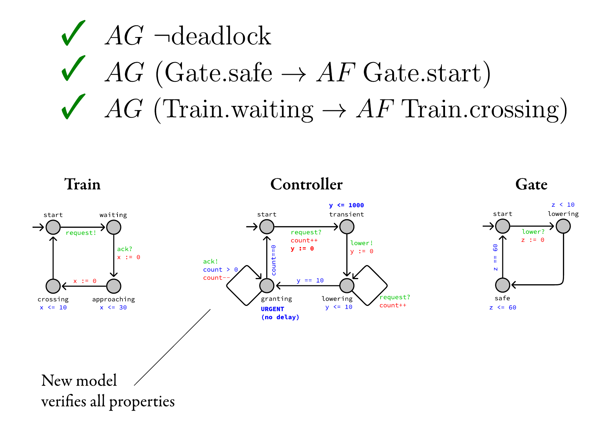

Modelling and Verification in UPPAAL
Module 1 - Deck 5: UPPAAL
1 UPPAAL models and properties
UPPAAL combines two ingredients introduced in the deck:
- networks, or products, of automata, used to model concurrent timed systems;
- a monitorable fragment of CTL, used to state properties that the model checker verifies.
The models are timed because real-valued clocks measure elapsed time. They are concurrent because several templates execute as one network and can communicate through shared state or synchronous channels.
1.1 Networks of automata
A network is built from automata whose ordinary locations and edges are enhanced with:
- bounded-range variables, such as
int[0,100] i; - real-valued clocks, such as
clock x; - shared memory, such as
bool flag; - synchronous send and receive actions, such as
ack!andack?.
A channel send and its matching receive occur together. In the introductory example, one component emits inc!, another receives inc?, and the receiver updates count++. The same pattern applies to dec! and dec?.
1.2 Global states
A global state records:
- one current location for every automaton;
- values of local and global variables;
- values of all clocks;
- satisfaction of the relevant invariants.
The state is therefore not just a location name. Two executions can occupy the same tuple of locations but represent different global states because variables or clock values differ.
1.3 Discrete and delay transitions
The transition relation contains both discrete changes and the passage of time.
| Transition aspect | Meaning |
|---|---|
| Location change | an automaton follows an edge to another location |
| Update | local/global variables change or clocks are reset |
| Delay | time elapses uniformly on all clocks |
| Synchronisation | two automata jointly take matching ! and ? edges |
| Guard | an edge may be taken only when its condition holds |
The distinction between a location invariant and a transition guard is essential. An invariant such as \(y\le 1\) limits how long the system may remain at the location. When \(y=1\), time may not advance further there. A guard such as \(y\ge 1\) only specifies when an outgoing edge becomes enabled; by itself, it does not force the edge to occur, so the system may continue delaying if the current location allows it.
An enabled edge need not be taken immediately. Preventing delay requires an invariant, an urgent location, or another urgency mechanism. This distinction explains both modelling defects found in the train example.
2 The UPPAAL query fragment
The deck presents five query patterns. The path quantifier is written first: \(A\) means “for all paths” and \(E\) means “there exists a path.” The second symbol describes the temporal requirement.
| UPPAAL form | CTL-style reading | Meaning |
|---|---|---|
A[] p |
\(AG\,p\) | \(p\) holds in every reachable state on every path |
E<> p |
\(EF\,p\) | some path eventually reaches a state satisfying \(p\) |
A<> p |
\(AF\,p\) | every path eventually reaches a state satisfying \(p\) |
E[] p |
\(EG\,p\) | some path keeps \(p\) true forever |
A[] (p --> A<> q) |
\(AG(p\rightarrow AF\,q)\) | whenever \(p\) holds, \(q\) must eventually hold on every continuation |
Safety properties commonly use A[]; reachability uses E<>; inevitability uses A<>; and response properties combine A[] with A<>.
3 Mutual exclusion
3.1 The process template and required properties
The first case study instantiates a process template twice, with identifiers \(0\) and \(1\). Each process repeatedly performs non-critical work, calls lock(pid), enters a critical location, and then invokes unlock(pid).
Mutual exclusion requires that at most one distinct process is critical at any moment:
\[ AG\,\neg\bigvee_{i\ne j} \bigl(p_i.\mathit{critical}\land p_j.\mathit{critical}\bigr). \]
Deadlock-freeness requires an enabled non-delay transition, possibly after some delay, unless all processes have legitimately halted. The deck writes this in the form
\[ AG\left(\neg\mathit{deadlock}\lor\bigwedge_i p_i.\mathit{halt}\right). \]
The halt exception separates an intended terminated state from an unintended global deadlock.
3.2 Algorithm 1: flags only
Each process sets its own flag before waiting:
flags[pid] := true;
while (flags[1-pid] == true) {}On exit, it clears the flag. The model satisfies mutual exclusion because a process enters the critical location only when the other flag is false. It is not deadlock-free: both processes can set their flags to true, after which each waits for the other to clear its flag. Neither process can proceed to the critical location and neither can reach its clearing operation.
3.3 Algorithm 2: victim only
The second proposal uses one shared variable:
victim := pid;
while (victim == pid) {}The model still verifies mutual exclusion, but it is not deadlock-free. A lone process can write its own identifier to victim and then wait forever because no competing process updates the variable. The algorithm blocks even without contention.
3.4 Algorithm 3: flags and victim
The third proposal combines the two ideas:
flags[pid] := true;
victim := pid;
while (flags[1-pid] == true && victim == pid) {}A process waits only if the other process is interested and the current process is the designated victim. If both processes compete, the last assignment to victim breaks the symmetry: one waits and the other enters. On leaving, a process clears its flag. UPPAAL verifies both requirements for this model.

The three algorithms can be compared directly:
| Algorithm | Shared information | Mutual exclusion | Deadlock-freeness | Failure mechanism |
|---|---|---|---|---|
| 1 | two flags | yes | no | both flags become true and both processes wait |
| 2 | victim | yes | no | a single process waits for another write |
| 3 | flags and victim | yes | yes | victim breaks simultaneous interest |
4 Train, controller, and gate
4.1 Informal timing requirements
The second case study consists of three communicating timed automata.
- Train: sends
request!, waits forack?, starts crossing within \(30\) seconds of the acknowledgement, and completes crossing within \(10\) seconds. - Controller: receives train requests, sends
lower!to the gate, and sends acknowledgements exactly \(10\) seconds after lowering starts. A counter records pending requests. - Gate: receives
lower?, reaches thesafestate within \(10\) seconds, and returns tostartafter \(60\) seconds from the beginning of lowering.
The automata communicate through the channels request, lower, and ack.
4.2 Train automaton
The train moves through start, waiting, approaching, and crossing.

From start, the train emits request! and enters waiting. The ack? edge resets clock \(x\) and enters approaching. The invariant \(x\le 30\) bounds the time before crossing begins. Entering crossing resets \(x\) again, and \(x\le 10\) bounds the crossing duration.
4.3 Controller automaton
The controller uses locations start, transient, lowering, and granting, a pending-request counter, and clock \(y\).

Receiving request? increments count. The controller emits lower!, resets \(y\), and remains in lowering under invariant \(y\le 10\). The edge to granting is enabled at \(y=10\). From granting, ack! is sent while count>0, and count is decremented. When count==0, the controller returns to start.
4.4 Gate automaton
The gate moves from start to lowering on lower?, resetting clock \(z\). It must leave lowering before \(10\) seconds and enters safe. The invariant \(z\le 60\) bounds its stay in safe, and the edge at \(z=60\) returns to start.

5 Safety verification and the urgency defect
The safety requirement is
\[ AG\bigl(\mathit{Train.crossing}\rightarrow\mathit{Gate.safe}\bigr). \]
It says that every reachable state in which the train is crossing must also place the gate in its safe location.
UPPAAL finds that the initial model violates this property. The problem is the controller’s granting location. Although the acknowledgement edge is enabled, the model allows time to pass there. A delayed acknowledgement shifts the train’s \(30\)-second approaching interval later, while the gate still raises after its fixed \(60\)-second safe interval. The train can therefore begin or continue crossing after the gate has left safe.
The correction marks Controller.granting as urgent, which forbids delay in that location. Pending acknowledgements are then issued immediately, restoring the intended timing relation. The corrected model satisfies the safety property.

6 Liveness verification and the transient-location defect
The deck then checks three properties:
\[ AG\,\neg\mathit{deadlock}, \]
\[ AG\bigl(\mathit{Gate.safe}\rightarrow AF\,\mathit{Gate.start}\bigr), \]
and
\[ AG\bigl(\mathit{Train.waiting}\rightarrow AF\,\mathit{Train.crossing}\bigr). \]
The first excludes deadlocks. The second requires the gate eventually to return to start whenever it is safe. The third requires every waiting train eventually to cross.
UPPAAL verifies the first two but rejects the train-response property. In the model, the controller may remain forever in transient without issuing lower!. This infinite-delay behaviour is not a deadlock: delay remains possible. It nevertheless prevents the train from receiving its acknowledgement and reaching crossing.
The final model adds clock control to the transient stage. Clock \(y\) is reset when entering transient, and an invariant \(y\le 1000\) gives a finite upper bound on the delay. The exact bound is large, but finiteness is what matters for the stated eventuality: the controller can postpone lower!, but cannot postpone it forever. With the urgent granting correction retained, UPPAAL verifies all three properties.

The two counterexamples expose different errors. Unbounded delay in granting breaks safety because acknowledgement can occur too late. Unbounded delay in transient breaks liveness because lowering may never be issued. The first is repaired with urgency; the second with a finite time bound.
7 Sources
- 5_UPPAAL.pdf, primary slide deck. The six local figures are unmodified extractions from this lecturer-supplied deck.